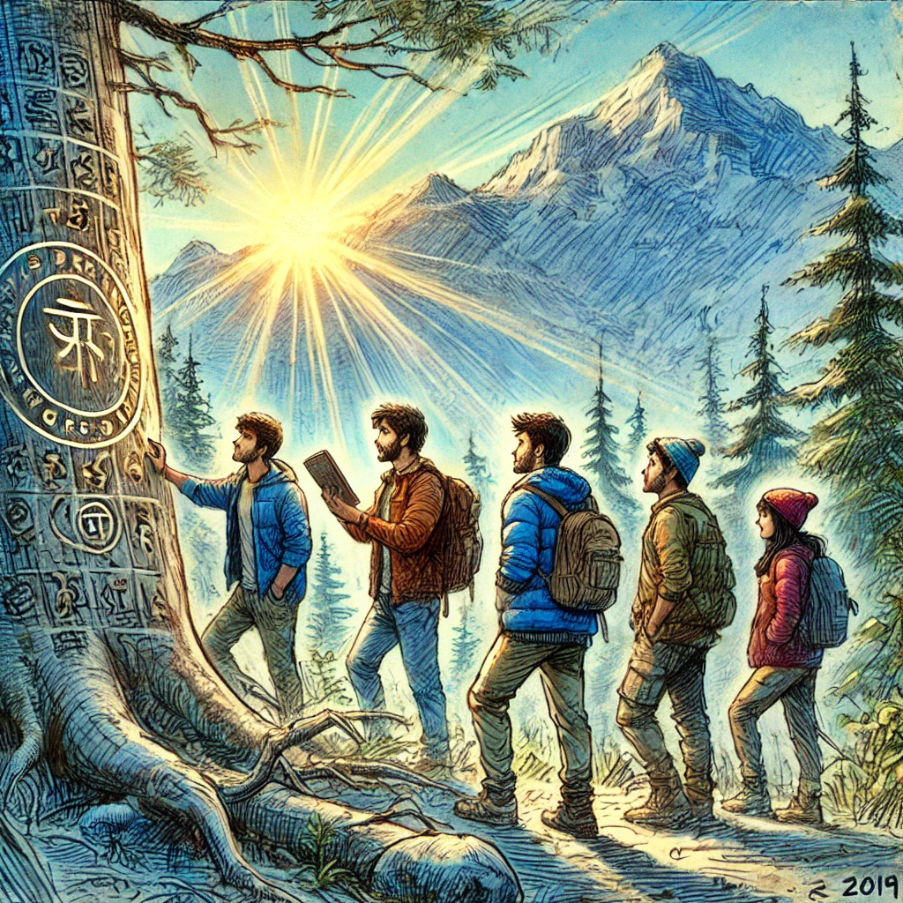
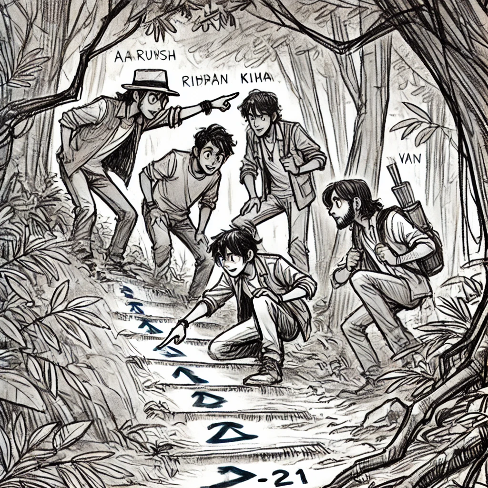
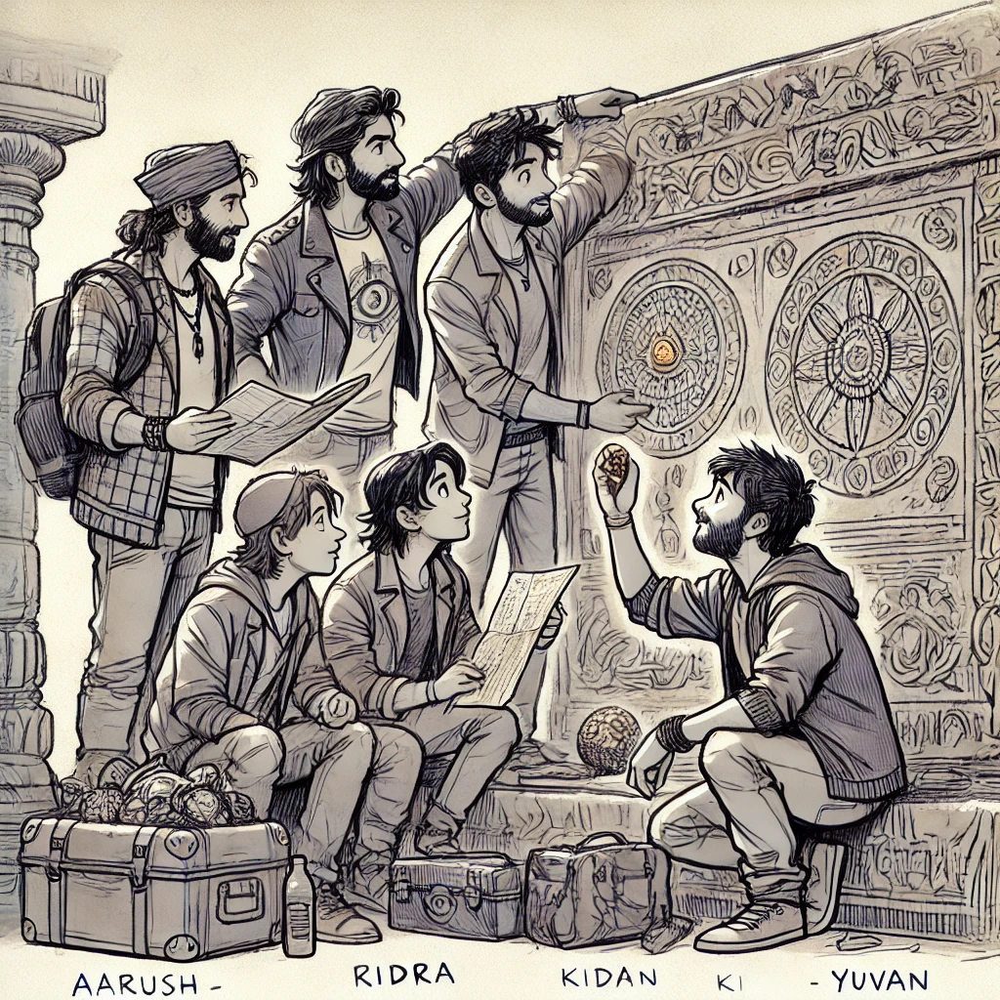
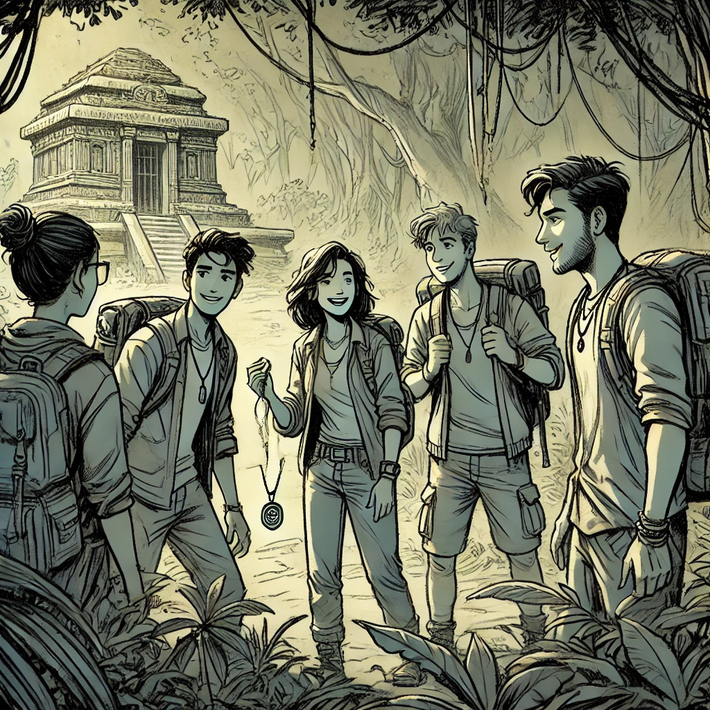
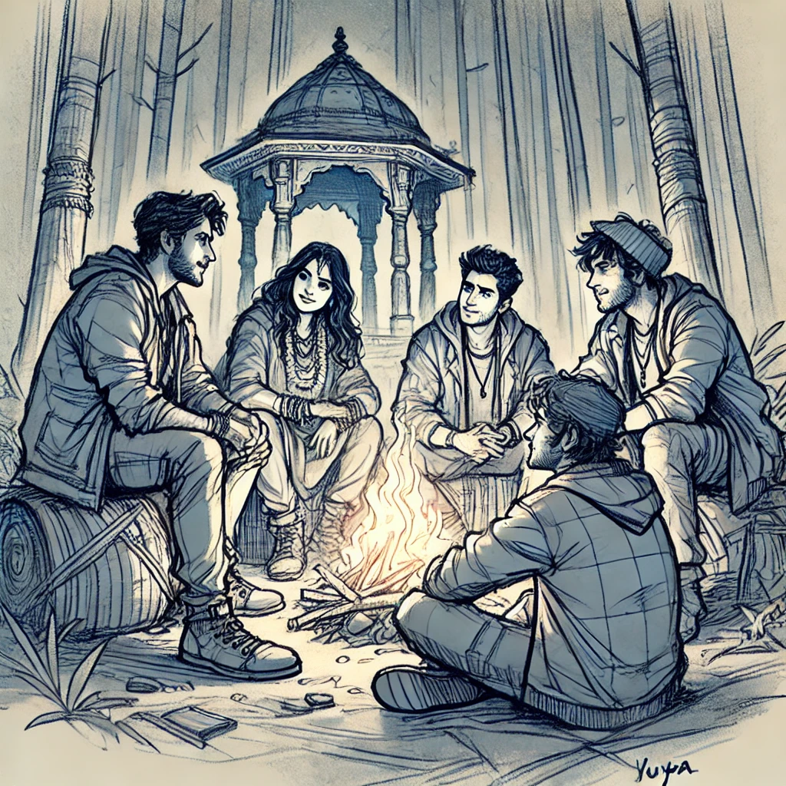
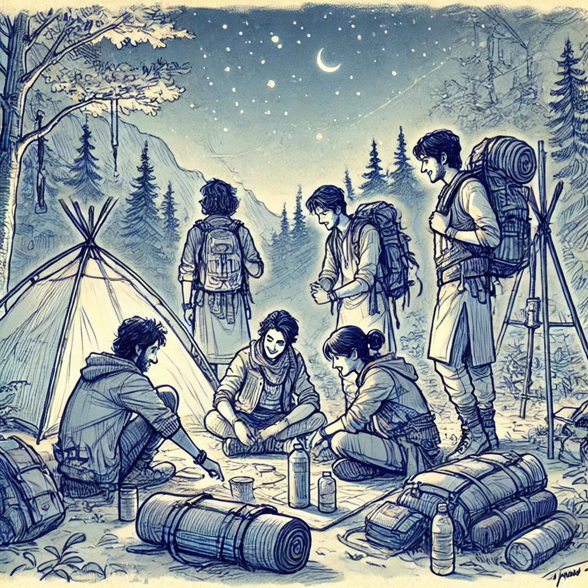
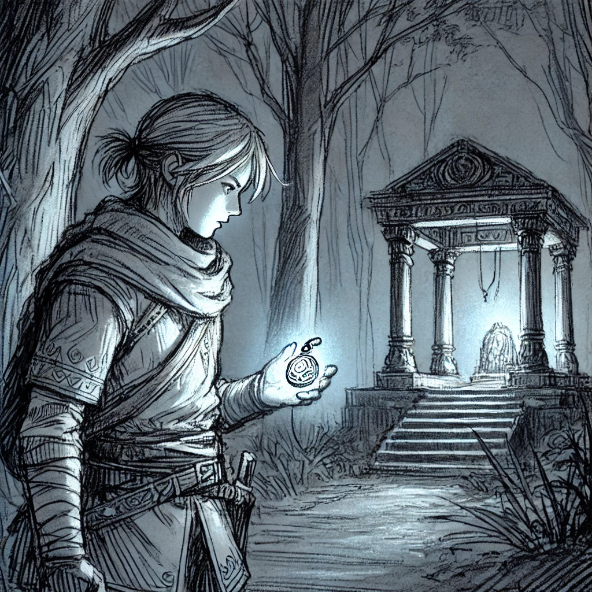

Rishikesh Revelry: The Kuari Pass Chronicles
Continue the adventure as the friends follow mysterious symbols through hidden trails, uncovering ancient shrines and legends in the Himalayas.
Page 18: Following the Markings
Early the next morning, the friends wake up refreshed after a good night's sleep. The sun shines brightly, and the mountains look even more magnificent.
Aarush: "Alright team, let's follow those symbols. This could lead us to something amazing."
Deven: "Stay close and keep your eyes open. The path might be tricky."
They begin walking along the trail marked by the symbols, with Yuvan carefully examining each symbol along the way.
Yuvan: "These symbols look ancient. Maybe they tell a story or guide us somewhere."
Page 19: The Hidden Trail
After walking for a couple of hours, they reach a narrow path hidden behind thick bushes. Rudra points ahead.
Rudra: "Look, the symbols continue down this way. Should we go?"
Vihaan: "Absolutely! This is getting exciting."
They carefully make their way down the hidden trail, the path becoming steeper and rockier. The air feels cooler, and a sense of mystery fills the atmosphere.
Page 20: The Ancient Shrine

Suddenly, the trail opens up to a small clearing where an old shrine stands, covered with moss and surrounded by tall trees. The group stops in awe.
Kiaan: "Wow, this place is incredible. It's like stepping back in time."
Deven: "This shrine is sacred. We should respect it and not disturb anything."
Yuvan approaches the shrine and notices more symbols carved into the stone.
Yuvan: "These carvings seem to depict a story. Maybe it's related to the legends we heard."
Page 21: Unveiling the Legend
Rudra pulls out his map and compares it with the symbols they've followed.
Rudra: "According to my research, this area is believed to hold ancient secrets about the Kuari Pass. Maybe this shrine is a clue."
Aarush: "Let's document everything. This could be important for our trek."
They take photos and notes, ensuring they capture every detail. Suddenly, Vihaan spots something glimmering near the base of the shrine.
Vihaan: "Hey, what's that shiny thing over there?"
He walks closer and picks up a small, intricately designed pendant.
Vihaan: "It's beautiful. Maybe it's a good luck charm."
Page 22: An Unexpected Encounter
As they examine the pendant, a rustling sound comes from the nearby bushes. The friends tense up, unsure of what to expect.
Deven: "Stay calm. It could be an animal."
Out of the bushes steps Anika, the seasoned trekker they met earlier.
Anika: "I see you've found the pendant. It's said to bring good fortune to those who respect the mountains."
Kiaan: "Anika! What are you doing here?"
Anika: "I decided to explore this area more thoroughly. There's a lot more to discover."
Page 23: Sharing Stories
They sit together around the shrine, sharing their experiences and the stories they've heard.
Anika: "The Kuari Pass has always been a place of mystery. Many trekkers come here seeking adventure, but not everyone is prepared for what lies ahead."
Yuvan: "We heard about the spirits near Kuari Pass. Do you believe in them?"
Anika: "Legends say that the mountains protect their secrets fiercely. It's essential to tread carefully and respect nature."
Page 24: Preparing for the Trek
After spending some time at the shrine, the group decides to rest before continuing their journey.
Rudra: "We should set up camp here for a while. It's safer to start our trek tomorrow."
Aarush: "Good idea. Let's make sure we have everything we need."
They organize their gear, ensuring they are ready for the challenges ahead. As night falls, the stars shine brightly above, and the sounds of the forest lull them to sleep.
Page 25: Midnight Mysteries
Around midnight, Yuvan wakes up to a faint light near the shrine. Curious, he quietly approaches to investigate.
Yuvan: "Hello? Is someone there?"
He sees a soft glow emanating from the pendant Vihaan found earlier. The light pulsates gently, illuminating the surroundings.
Yuvan: "This is strange. Maybe it's part of the legend."
He decides to inform the group in the morning, wondering what other secrets the mountains hold.
 To Be Continued... What mysteries will the pendant reveal? How will the group navigate the challenges ahead? Stay tuned for Part Four of Rishikesh Revelry: The Kuari Pass Chronicles!
To Be Continued... What mysteries will the pendant reveal? How will the group navigate the challenges ahead? Stay tuned for Part Four of Rishikesh Revelry: The Kuari Pass Chronicles!